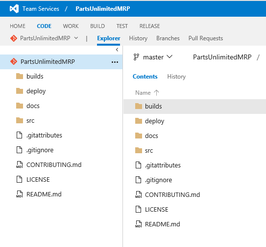

Set up Parts Unlimited MRP
Set up Parts Unlimited MRP with VSTS
In this lab, we will set up the PartsUnlimited MRP VSTS team project as a pre-requisite for the Continuous Integration lab. You will need an active Visual Studio Team Services (VSTS) account already, or you will need to sign up for a free Visual Studio Team Services account by following this link. Ensure that you are also a Project Collection Administrator for the Visual Studio Team Services account or follow this link.
Pre-requisites:
-
An active Visual Studio Team Services (VSTS) account
-
Project Collection Administrator rights to the Visual Studio Team Services account
Tasks Overview:
Set up your Visual Studio Team Services account: This step helps you download the source code, and then push it to your own Visual Studio Team Services account.
1: Set up your Visual Studio Team Services account
We want to push the application code to your Visual Studio Team Services account in order to use Team Build for the Continuous Integration HOL.
1. First, navigate to your Visual Studio Team Services account by typing into a browser:
https://{VSTS instance name}.visualstudio.com
2. Once at your Visual Studio Team Services account, create a new PartsUnlimitedMRP team project by clicking on the New button under Recent projects & teams. Type in the project name as PartsUnlimitedMRP and select Git as the version control, then click on Create project.

3. After the wizard creates your new team project, navigate to the PartsUnlimitedMRP team project and click on the Code tab on the upper-left.

4. The PartsUnlimitedMRP Git repository will be empty, so copy the Clone URL of the VSTS repository to your clipboard and paste it into a text document for use later.

5. Clone the PartsUnlimitedMRP git repository located in GitHub onto your local machine, open your command line tool and type :
git clone https://github.com/Microsoft/PartsUnlimitedMRP.git

NOTE: If you are running Linux on your local workstation, install git:
sudo apt-get install git
NOTE: If you are running Windows, you have to install the git client from here:
6. Add the Clone URL of your Visual Studio Team Services repository as a new remote called vsts (The URL previously copied at the step 4) and push to it your Visual Studio Team Services account.
cd PartsUnlimitedMRP/
git remote add vsts <url_to_repository>
git push -u vsts --all

NOTE: If it’s the first time that you are using your Visual Studio Team Services subscription, it will ask you to be authenticated.

NOTE: We added the Visual Studio Team Services repository as a remote named vsts, so we need to push to that remote in the future for our changes to appear in our Visual Studio Team Services repository.
7. If your refresh your CODE section page, Your Visual Studio Team Services account should now have a copy of the PartsUnlimitedMRP application:

Next steps
In this lab, you learned how to set up the PartsUnlimitedMRP team project in Visual Studio Team Services. Try these labs out for next steps:
Continuous Feedbacks
Issues / Questions about this HOL ??
Thanks